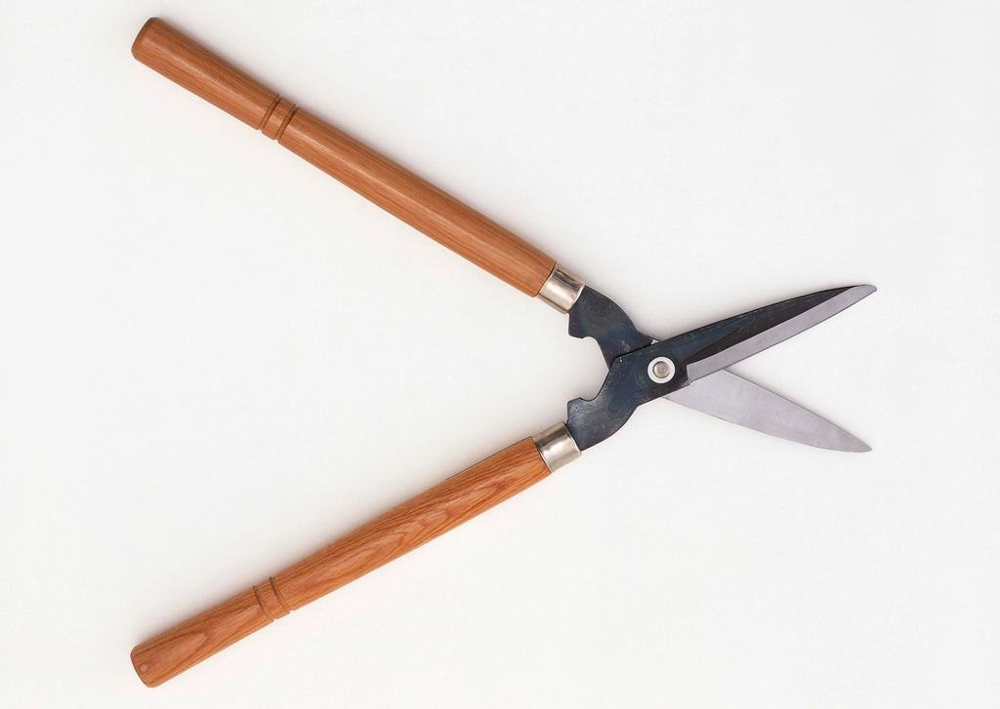
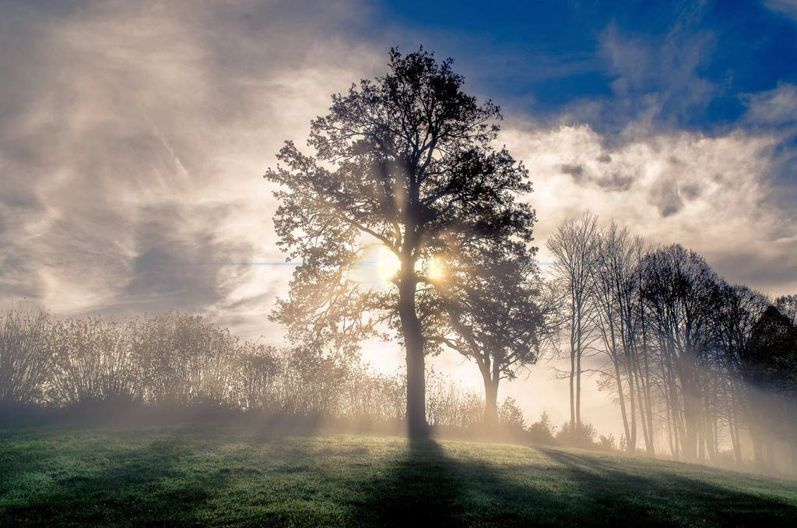
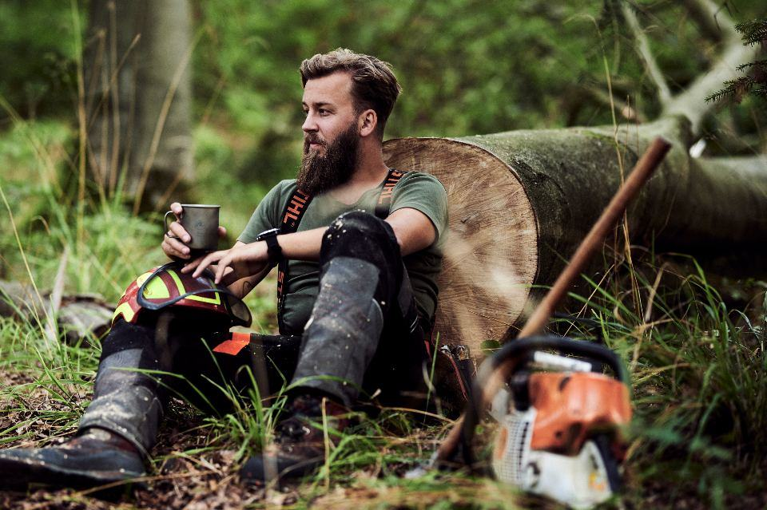
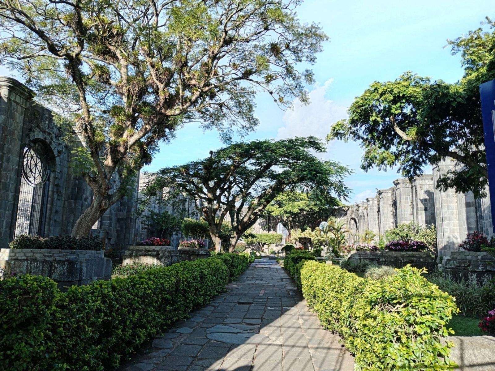
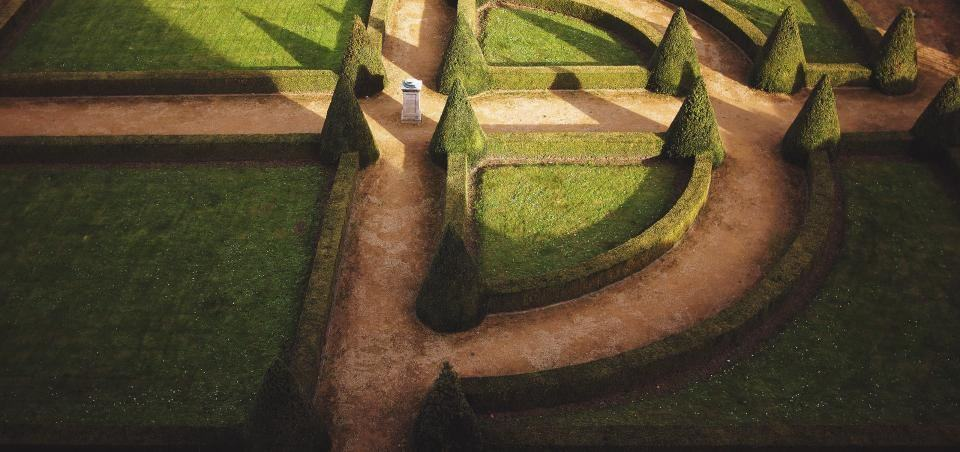
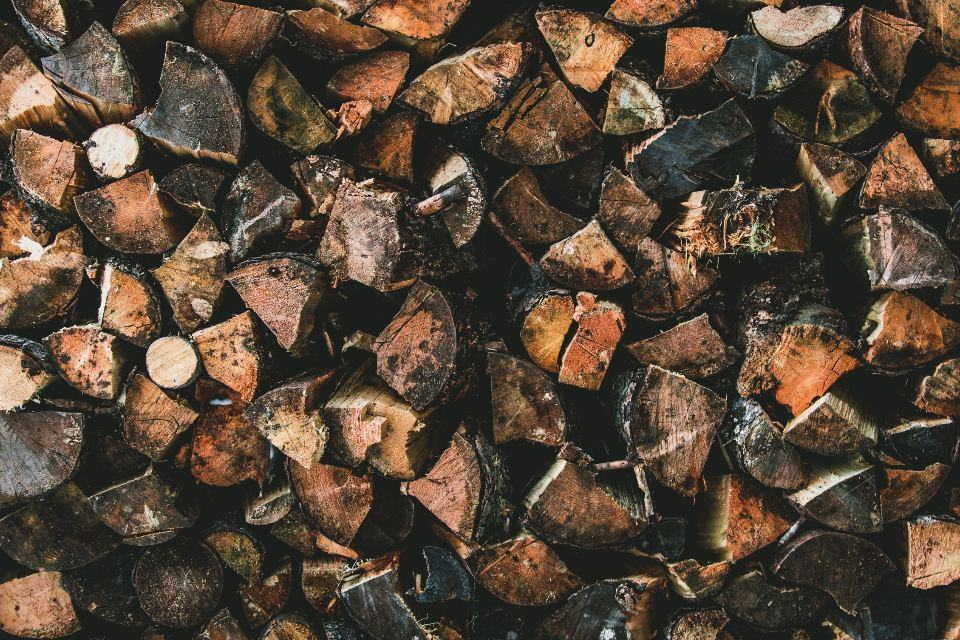
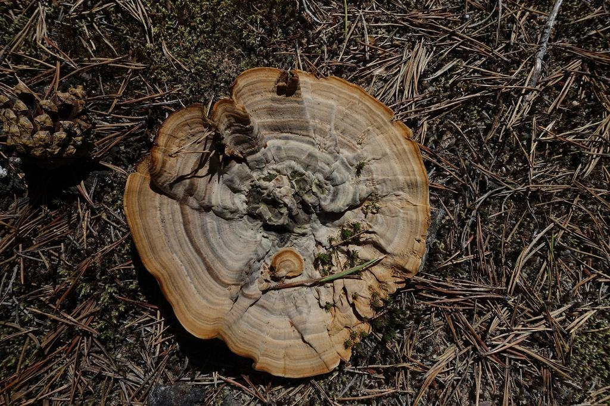
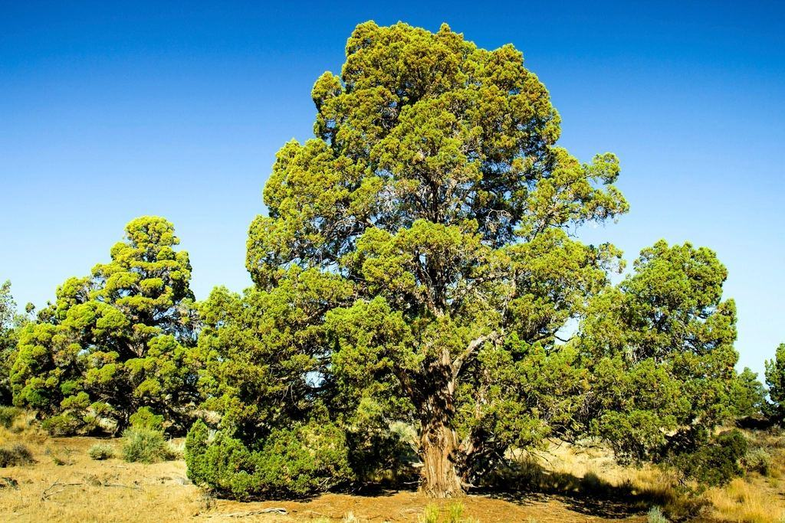

Uppdrag
Ett urval av fällningar, beskärningar och stubbfräsningar.
- 2026

Brf Klippan 9
Rötskadad lönn på innergård, fälld utan att stänga gårdens tvättstuga.
- 2026

Valhallavägen
Nattarbete med TA-plan och avstängning av ett körfält.
- 2025

Villa i Äppelviken
Tre granar bakom huset lyfta över taket i sju sektioner.
- 2025

Brf Sjöbjörnen
Årlig beskärning av 64 körsbärsträd och lindar på gård och kaj.
- 2025

Radhusområde
Elva tallar längs en gemensam gångväg, fällda under två dagar.
- 2026

Brf Lärkträdet
Fräsning av 18 stubbar inför ny gårdsplantering i november.
Liften i arbete







Illustrationsbilder
Styrelser och villaägare berättar
Klas N., ordförande · Södermalm”Vi trodde att lönnen inte gick att få ut från gården. De kom in med en lift genom porten och var klara före lunch.”
Elisabeth K. · Hammarby sjöstad”Johanna skickade allt material inför stämman: foton, pris och tidsplan. Styrelsen behövde inte göra ett enda utskick själv.”
Anders P. · Bromma”Tre granar över taket, inte en enda tegelpanna trasig. Kranen stod på gatan i fyra timmar.”